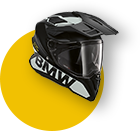
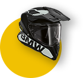

¿Qué es el
GS Trophy?

Son siete días de pura aventura. Siete días, y dos años de preparación. Siete días que cambian la vida. Cada rider puede participar una única vez en el International GS Trophy. Sin embargo, no es una carrera clásica; ya que los exigentes desafíos en los que los participantes demuestran sus conocimientos y habilidades de conducción, tienen que ver tanto con el espíritu como con la habilidad del equipo. Tuvo sus inicios en el año 2008 y hasta la fecha se han celebrado en 7 ocasiones: Túnez | 2008, Sudáfrica | 2010, Sudamérica (Argentina y Chile) | 2012, Norteamérica (Canadá) | 2014, Tailandia | 2016, Mongolia | 2018, Nueva Zelanda | 2020, Albania | 2022
GS Trophy 2021
Qualifier GT
Es el evento más grande del año del mundo GS en Guatemala. Tres días llenos de pruebas, retos técnicos y mucha diversión, donde cada uno de los participantes ponen a prueba sus habilidades de manejo, así como el compañerismo que representa a la comunidad de motoristas Off-road en busca de uno de los 3 lugares para representar a Guatemala en el GS Trophy Qualifier Regional y así poder competir por formar parte del equipo latinoamericano en el GS Trophy 2022 a realizarse en Albania.
Reglamento
 

1
Propiedad de la moto
2
Pilotos

3
repetición de participación
4
conducta

5
reclamos
6
acompañantes
Puntuación
Tabla de posiciones
#
nombre
pts
Testimonios
Día 1
La competencia ha comenzado y todos los participantes están listos para superar su propio reto GS Trophy Qualifier GT. Te compartimos las imágenes más sobresalientes del día, como van transcurriendo este gran evento.
Día 2
La competencia continúa y cada uno de los participantes están dando su mejor esfuerzo para poder obtener un puesto en el podium de ganadores.
Comentarios
El GS trophy Guatemala ha sido de alto nivel, los participantes han demostrado lo mejor de cada uno, tanto en habilidades sobre la moto como su capacidad de trabajo en equipo. ! Estoy muy feliz porque tenemos candidatos de alto nivel que tienen un buen chance para entrar al evento mundial!
José Pinto
Instructor certificado BMW MotorradMarshall GS Trophy 2021
"El GS Trophy es una experiencia que te hace sentirte más vivo que nunca. ¿Qué te hace sientir vivo? El contacto con la naturaleza, el andar todo el día en tu moto, la amistad con las personas."
Luis Arturo Palmieri
MarshallGS Trophy 2021
"El Trophy es una comunidad de aventureros con alto valor de amistad donde se pone a prueba las habilidades de los mejores pilotos de doble propósito."
Alex Rudeke
Director de eventoGS Trophy 2021
"Es la aventura que define el sentimiento de libertad, amistad y compañerismo que todos los amantes de GS deseamos vivir"
Gato Vides
MarshallGS Trophy 2021